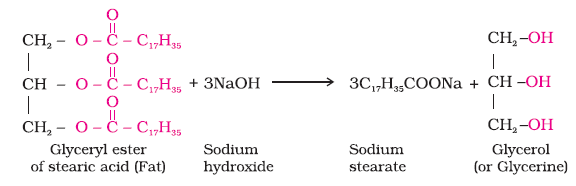
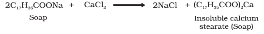
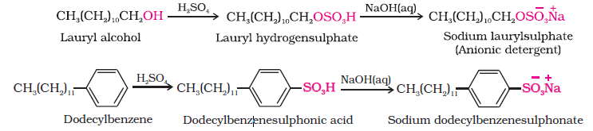
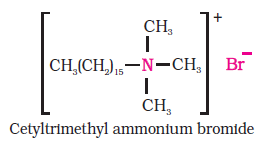
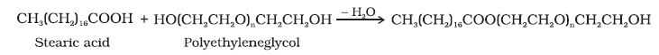

In this Section, we will learn about detergents. Two types of detergents are used as cleansing agents. These are soaps and synthetic detergents. These improve cleansing properties of water. These help in removal of fats which bind other materials to the fabric or skin.

Soaps are the detergents used since long. Soaps used for cleaning purpose are sodium or potassium salts of long chain fatty acids, e.g., stearic, oleic and palmitic acids. Soaps containing sodium salts are formed by heating fat (i.e., glyceryl ester of fatty acid) with aqueous sodium hydroxide solution. This reaction is known as saponification.
In this reaction, esters of fatty acids are hydrolysed and the soap obtained remains in colloidal form. It is precipitated from the solution by adding sodium chloride. The solution left after removing the soap contains glycerol, which can be recovered by fractional distillation. Only sodium and potassium soaps are soluble in water and are used for cleaning purposes. Generally potassium soaps are soft to the skin than sodium soaps. These can be prepared by using potassium hydroxide solution in place of sodium hydroxide.
Soap chips are made by running a thin sheet of melted soap onto a cool cylinder and scraping off the soaps in small broken pieces. Soap granules are dried miniature soap bubbles. Soap powders and scouring soaps contain some soap, a scouring agent (abrasive) such as powdered pumice or finely divided sand, and builders like sodium carbonate and trisodium phosphate. Builders make the soaps act more rapidly. The cleansing action of soap has been discussed in Unit 5.
Why do soaps not work in hard water?
Hard water contains calcium and magnesium ions. These ions form insoluble calcium and magnesium soaps respectively when sodium or potassium soaps are dissolved in hard water.
These insoluble soaps separate as scum in water and are useless as cleansing agent. In fact these are hinderance to good washing, because the precipitate adheres onto the fibre of the cloth as gummy mass. Hair washed with hard water looks dull because of this sticky precipitate. Dye does not absorb evenly on cloth washed with soap using hard water, because of this gummy mass.
Synthetic detergents are cleansing agents which have all the properties of soaps, but which actually do not contain any soap. These can be used both in soft and hard water as they give foam even in hard water. Some of the detergents give foam even in ice cold water.
Synthetic detergents are mainly classified into three categories: (i) Anionic detergents (ii) Cationic detergents and (iii) Non-ionic detergents
(i) Anionic Detergents: Anionic detergents are sodium salts of sulphonated long chain alcohols or hydrocarbons. Alkyl hydrogensulphates formed by treating long chain alcohols with concentrated sulphuric acid are neutralised with alkali to form anionic detergents. Similarly alkyl benzene sulphonates are obtained by neutralising alkyl benzene sulphonic acids with alkali.

In anionic detergents, the anionic part of the molecule is involved in the cleansing action. Sodium salts of alkylbenzenesulphonates are an important class of anionic detergents.
(ii) Cationic Detergents: Cationic detergents are quarternary ammonium salts of amines with acetates, chlorides or bromides as anions. Cationic part possess a long hydrocarbon chain and a positive charge on nitrogen atom. Hence, these are called cationic detergents. Cetyltrimethylammonium bromide is a popular cationic detergent and is used in hair conditioners.
Cationic detergents have germicidal properties and are expensive, therefore, these are of limited use.

(iii) Non-ionic Detergents: Non-ionic detergents do not contain any ion in their constitution. One such detergent is formed when stearic acid reacts with polyethyleneglycol.

Liquid dishwashing detergents are non-ionic type. Mechanism of cleansing action of this type of detergents is the same as that of soaps. These also remove grease and oil by micelle formation.